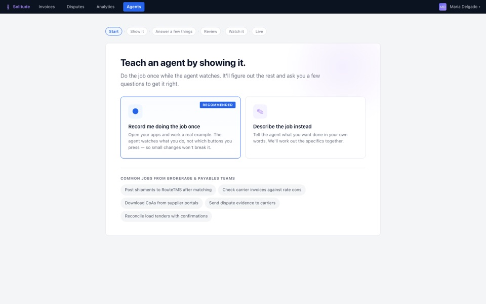
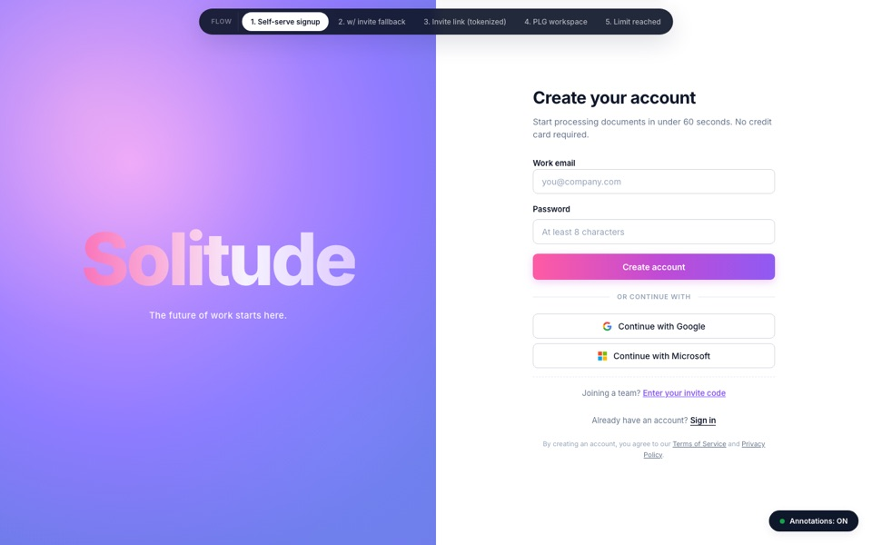

Yousef Kassem
Things I designed at Solitude.ai, where I'm co-founder and head of product. We sold AI that handles back-office paperwork for freight and metals companies.
One idea runs through all of them. I design around how experienced operators already work in the software they know, automate what can safely be automated, and keep a person in the loop, because in these industries a wrong data entry costs the company real money.
Each prototype opens with a short guided tour: an amber outline shows what to click next and a card explains why. Company names, people and figures inside are made up. They work best on a laptop.

Carrier payables workspace
THE PROBLEMBefore a freight broker pays a trucking company, someone checks three documents for every shipment: the agreed rate, the delivery paperwork and the invoice. Our customers were doing this by hand, hundreds of times a week.
WHAT I DESIGNED AND WHYThe screen looks and behaves like the spreadsheets payables clerks already work in: one row per shipment, problems flagged in colour, and the documents side by side so nothing needs a second window. Users told us they wanted to set their own checking rules without asking us every time, so over five versions I cut the rules set-up down until a clerk could manage it alone from settings.
WHAT IT ACHIEVEDUsed by two customers. One of them, a logistics company checking 500 invoices a week, saves more than 30 hours of manual work and over $200K a year.
Open the prototype
Certificates workspace
THE PROBLEMA UK metals distributor received quality certificates from hundreds of suppliers, each in a different format, and typed the results into their own system by hand. A wrong number on a safety-critical part has serious consequences.
WHAT I DESIGNED AND WHYTheir quality team lives in Excel, so the main screen is a dense table, one column per element, edited in place. A value the supplier left out is shown differently from a value that fails, so nobody rejects a good part by mistake. The main button sends the results straight into their system, because that is the moment their job is done. We changed it daily alongside them: with AI doing the building, engineering stopped being the bottleneck and the pace was set by how fast they could give us feedback.
WHAT IT ACHIEVEDThey bought it. They now process four times as many certificates, and checking accuracy became far easier.
Open the prototype
Teach an agent by showing it
THE PROBLEMTo go live, we had to connect to each customer's transport management software. Much of it is old, the vendors' IT teams were hard to reach, and every new customer ended up waiting on someone else's integration.
WHAT I DESIGNED AND WHYInstead of integrating, the agent watches the user do the job once, in the web portal or the desktop app, and then enters the data itself, whether or not the software has an API. It asks a few plain questions about the judgment calls, sums up what it will do in one paragraph, and does its first run while the user watches. The person stays in control because these entries move money.
WHAT IT ACHIEVEDIt took the integration bottleneck out of getting customers live. You can click through all six steps.
Open the prototype
Sign-up for self-serve users and invited teammates
THE PROBLEMOur sign-up asked everyone for an invite code. That suited a closed beta, but it turned away people who wanted to try the product on their own before talking to us.
WHAT I DESIGNED AND WHYOne link works for both groups. Someone evaluating us gets a trial workspace straight away, and an invited teammate lands inside their company's workspace. The trial is the full product with a cap on volume, not a cut-down version. Reaching the cap opens a short call booking ("You've earned a conversation") instead of a paywall, and their work carries over.
WHAT IT WAS FORLetting buyers prove the value to themselves first, and turning the end of a trial into a sales conversation rather than a dead end.
Open the prototype
Operations dashboard
THE PROBLEMA warehouse logistics company wanted one AI platform across freight, warehouse and staffing. Their last software rollout had taken two years, and they were wary of another.
WHAT I DESIGNED AND WHYI split the platform into three phases that each pay off on their own: a no-risk freight audit first, then their warehouse data, then everything joined up. The home screen shows where they are in the rollout next to today's numbers, so leadership can see value at every step.
WHAT IT WAS FORA pilot proposal. It was never built. It let us offer a pilot without asking for a big upfront commitment.
Open the prototype
solitude.ai, the company website
THE PROBLEMIn discovery interviews, the same question kept coming up: what value do we actually get from this?
WHAT I DESIGNED AND WHYAfter we signed our biggest client, I rewrote the site around the pain that mattered most to freight brokers, matching incoming payments to invoices, and led with the outcome instead of a list of features. The ROI calculator comes before "Book a call" because it answers the value question before a sales conversation starts. I built and published it myself in Replit.
WHAT I LEARNEDLead with business outcomes, not features.
Visit the live site